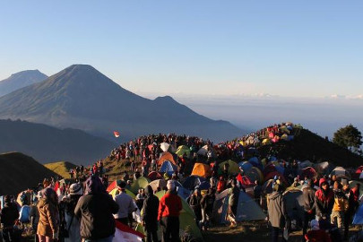

Gunung Prau dikenal dengan pemandangan di sunrise camp-nya yang sangat luar biasa. Pendaki akan disajikan pemandangan berupa padang rumput, bukit yang dikenal dengan sebutan "Bukit Teletubbies", serta jajaran berbagai gunung seperti Gunung Sumbing, Sindoro, Merapi, Merbabu, dan Slamet yang menghiasi horizon.
Oleh karena akses yang cukup mudah, medan yang tidak terlalu sulit, pemandangan yang sangat indah, dan waktu tempuh menuju puncak yang cukup singkat, maka seringkali Gunung Prau dipadati oleh pendaki terutama pada waktu liburan dan sekitar bulan Agustus karena mendekati hari kemerdekaan. Ramainya jumlah pendaki tercatat dapat melebihi 5.000 orang sehingga jangan heran kalau suasana di sunrise camp terasa mirip seperti pasar pada musim liburan tersebut.